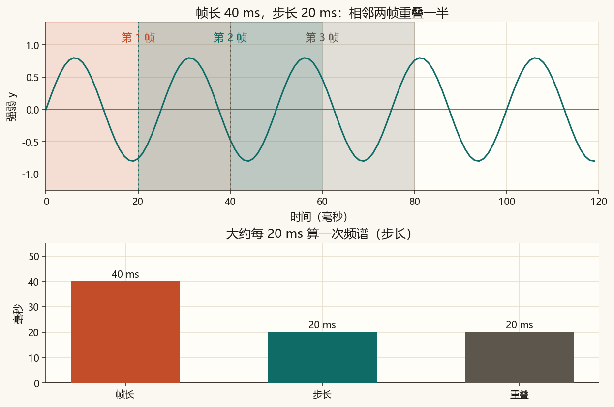
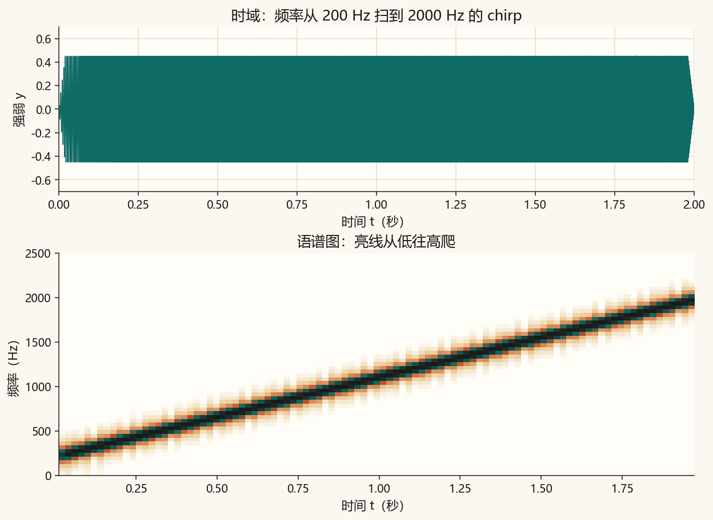
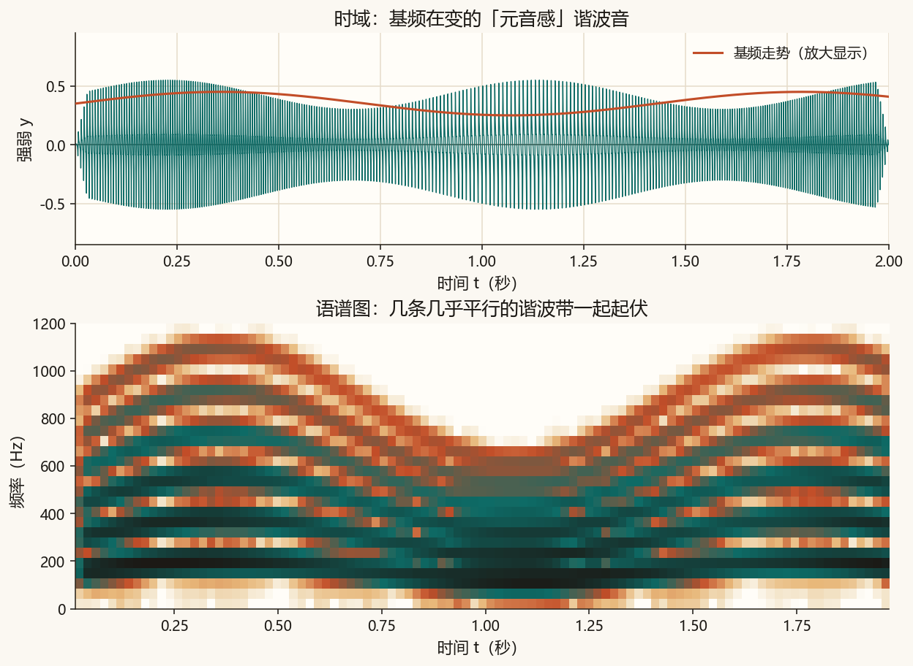
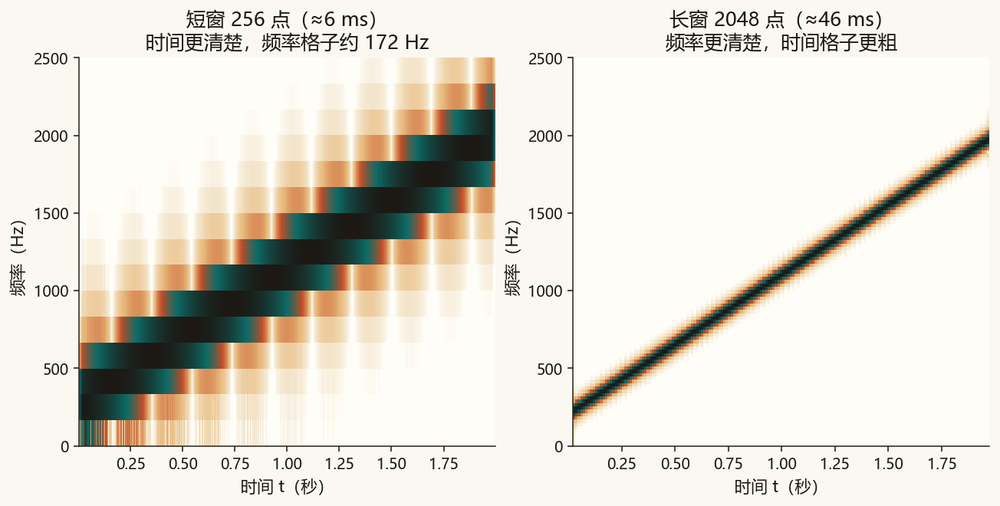
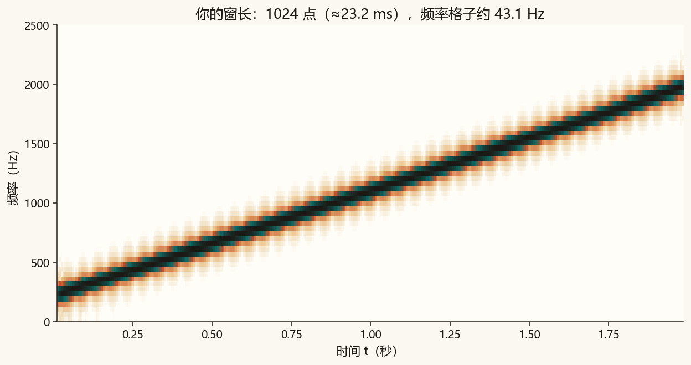

第 8 篇 · 时间 × 频率 · 约 50 分钟
整段声音只做一次频谱，会把「先低后高」揉成一根平均柱。这一篇改成每隔大约 20 毫秒算一次：横轴仍是时间，纵轴是频率，颜色表示这一小段有多响。这样就能读出 chirp 怎么爬、元音的谐波怎么一起晃。
第 3 篇的频谱回答：「整段里有哪些频率」。若频率本身在变——例如哨音从低滑到高——一次 FFT 只会告诉你「高低都出现过」，却说不清什么时候在低、什么时候在高。
短时傅里叶变换（STFT）的做法是：把声音切成许多很短的片段，每一段单独做频谱。把这些频谱按时间排开，就得到语谱图：横轴时间，纵轴频率，颜色越深（或越亮）表示这一小段里该频率越响。
每一小段叫一帧。三个常用名字：
重叠 = 帧长 − 步长

每一帧常先乘汉宁窗，让两端变软，减少「突然切断」带来的假频谱。脚本里是 np.hanning(nperseg)，再对加窗后的帧做 np.fft.rfft。
chirp 是频率随时间扫过去的声音。这里从 200 Hz 线性扫到 2000 Hz，时长 2 秒。时域看起来像越来越密的波纹；语谱图上应是一条从左下往右上爬的亮线。

听这段 chirp：
元音不是一根正弦。基频附近还有 2 倍、3 倍……谐波。下面合成一段「元音感」的音：基频在大约 100–180 Hz 之间缓慢起伏，谐波振幅按固定比例叠上去。语谱图上应出现几条几乎平行的亮带，一起上下晃。

听这段合成音：
窗长不能又短又长。频率轴上相邻两个格子的间距大约是
Δf ≈ 采样率 / 窗长
窗短 → 每一帧盯住的时间更窄，时间变化看得清，但 Δf 变大，频率糊。窗长 → 频率格子更细，但一帧里混进更长的一段时间，爬升的亮线会变「胖」。

下面用简化的短时傅里叶画同一段 chirp。拖动窗长，看亮线变细还是变糊。步长固定为窗长的 1/4。
先停在 128：亮线较跟手。拖到 512：上下更清楚，但整条线更「拖」。这是时间分辨率和频率分辨率的交换，不是程序算错了。
核心是一段窗滑过去，每一帧做实数 FFT：
window = np.hanning(nperseg)
frame = y[start:start + nperseg] * window
spectrum = np.abs(np.fft.rfft(frame))完整脚本在 code/ch08_stft.py。课文里的对照图不读文件顶部的窗长。
python code/ch08_stft.py终端里应出现「自检通过」，并提示短窗频率格子更粗、长窗更细。课文图是 ch08_frames.png、ch08_chirp.png、ch08_vowel.png、ch08_compare.png。ch08_mine.png 和 ch08_mine.wav 只跟随 WINDOW_SAMPLES。
若终端中文是乱码，先执行 chcp 65001。图和 wav 照样会保存。
code/ch08_stft.py，把 WINDOW_SAMPLES = 1024 改成 256，运行。打开 ch08_mine.png：亮线更跟手，频率方向更粗。4096，再运行。频率更细，时间方向拖影更明显。1024，再运行一次。
你的声音（与课文同一段 chirp，方便对照听）：
WINDOW_SAMPLES 请用 64 到 8192 的整数。步长取窗长的 1/4。
882 / 44100 ≈ 0.020 秒，也就是大约 20 ms。
横轴是时间，纵轴是频率，颜色表示这一小段里该频率有多响（本篇用相对分贝上色）。
时间分辨率变差（一帧盯住更长的时间，爬升线更拖），频率分辨率变好（Δf ≈ 采样率/窗长 变小，亮线在频率方向更细）。
语谱图是「看」。下一篇在频谱上动手：三段均衡改变音色，再用简单的谱减法压噪声，并听清它为什么会伤到语音。